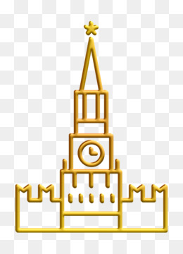

| Red | Rusija | Turska | Francuska |
|---|---|---|---|
| 1 | Moskva | Instanbul | Pariz |
| 2 | Sankt Peterburg | Ankara | Lion |
| 3 | Kazan | Alanja | Metz |
Moskva, grad koji diše poviješću, srce Rusije što kroz vjekove kroči. Njezine široke avenije i grandiozne građevine svjedoče o prošlim slavama i veličanstvenim trenucima. Krećeš se ulicama poput Arbat-a, gdje se stoljećima miješaju umjetnost, kultura i duhovnost. Svaka zgrada priča svoju priču, svaki kamen nosi teret prošlosti. Moskovski Kremlj, utvrda moći i simbol snage, stoji ponosno uz obale rijeke Moskve. Crveni trg, pod stopalima prolaznika, svjedoči o velikim događajima, od vojnih parada do masovnih okupljanja. Ali Moskva nije samo spomenik prošlosti; ona je i živo tkivo suvremenosti. Moderni neboderi se uzdižu uz bok tradicionalnim zdanjima, dok se puls grada osjeća u svakom kafiću, trgovini i kazalištu. Moskva je grad kontrasta, gdje se susreću stoljeća starosti i suvremena inovacija, gdje se povijest isprepliće s budućnošću, stvarajući jedinstvenu i neponovljivu atmosferu koja ostavlja trag u duši svakog posjetitelja.
Uzbuđujući ritam Moskve ne jenjava ni noću. Svjetla grada osvjetljavaju nebo, a noćni život pulsira u barovima, klubovima i restoranima. Sjajne predstave, koncerti svjetski poznatih umjetnika i bogata kulturna scena čine Moskvu nezaobilaznom destinacijom za ljubitelje umjetnosti i zabave.